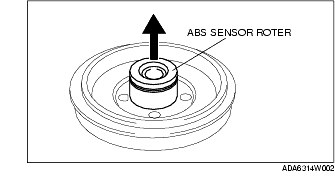
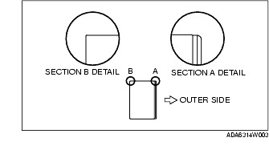
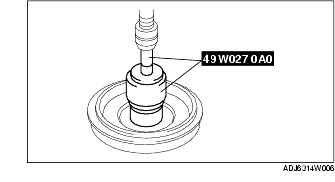

Hub spindle removal/installation
- • Performing the following procedures without first removing the ABS wheel-speed sensor may possibly cause an open circuit in the wiring harness if it is pulled by mistake. Before performing the following procedures, remove the ABS wheel-speed sensor (body side) and fix it to an appropriate place where the sensor will not be pulled by mistake while servicing the vehicle.
1. Remove the ABS wheel-speed sensor. (See REAR ABS WHEEL-SPEED SENSOR REMOVAL/INSTALLATION.)
2. Remove in the order indicated in the table.
3. Install in the reverse order of removal.

ABS Sensor Rotor Removal Note
1. Remove the ABS sensor rotor from the brake drum using a flathead screwdriver.

Wheel Bearing Removal Note
1. Remove the wheel bearing using the SSTs and press.

Wheel Bearing Installation Note
1. Set the wheel bearing to the brake drum as shown in the figure.

2. Install the wheel bearing using the SSTs and a press.

ABS Sensor Rotor Installation Note
1. Put a new ABS sensor rotor in using the SSTs and a press.

Locknut Installation Note
- • When the locknut is not tightened following the indicated procedures, the wheel bearing rollers may shift, and become a source of noise.
1. Tighten the locknut with 35-40 N·m {3.6-4.0 kgf·m, 26-29 ft·lbf} while turning the brake drum counterclockwise.
2. Turn the brake drum counterclockwise 10 times or more.
3. Tighten the locknut with 225-245 N·m {23.0-24.9 kgf·m, 166-180 ft·lbf} while turning the brake drum counterclockwise.
4. Turn the brake drum slowly by hand, and verify that there is no noise or dragging/grinding feelings.